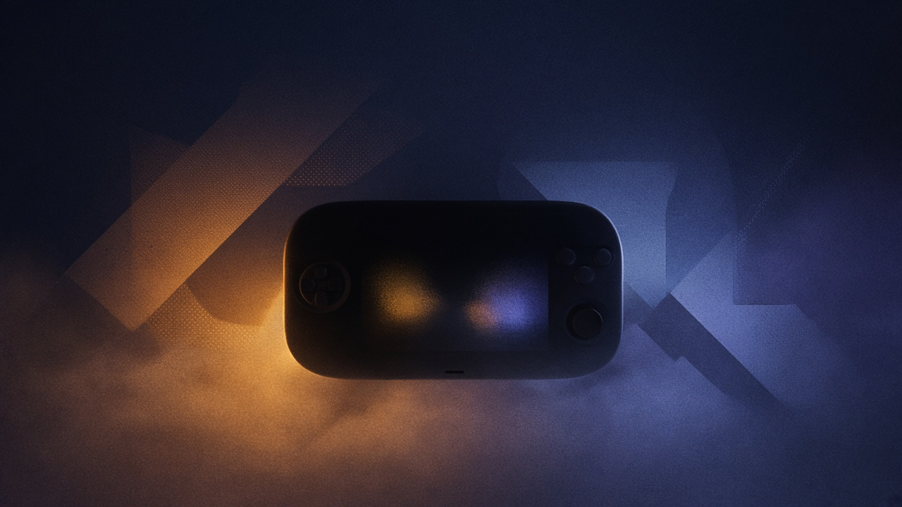

Game Boy: lommekonsollen som endret alt

I 1989 var Game Boy teknisk sett bakpå. Gråskala. Svak lyd. Ingen glam. Likevel vant den — fordi Nintendo forsto noe konkurrentene misforsto: spill skjer ikke bare i stua. De skjer i køen, på bussen, under dynen.
Det er fristende å snakke om Game Boy som nostalgi. Grønn skjerm. Tetris. Batterier som varte evig. Men historien er skarpere enn det. Game Boy er Nintendos første store bevis på at designfilosofi kan trumfe spesifikasjoner — og at «god nok» på rett sted slår «best» på feil sted.
Mindre spektakulær. Mer tilgjengelig.
Da Game Boy kom, fantes det allerede fargesterke håndholdte rivaler. De så imponerende ut i butikkhylla. Game Boy så ut som den var ment for å tåle en sekktur. Det var poenget.
Gunpei Yokoi og teamet hans bygde rundt holdbarhet, batteritid og en spillkatalog som fungerte i korte økter. Tetris ble ikke bare et hitspill. Det ble et argument: her er en maskin som alltid har noe å gjøre, uten strømstikk og uten stuepolitikk.
Portabilitet som kultur
Game Boy flyttet spill ut av den festeplanlagte stunden foran TV-en. Den gjorde gaming til noe du kunne ta med deg — og dermed til noe flere fikk lov til å være. Ikke fordi den var «for alle» i markedsføringsspråk, men fordi den faktisk passet inn i hverdagen.
Den samme tanken går igjen senere: DS-en med to skjermer og berøring, Switch som kan dokkes og løftes, og hele idéen om at Nintendo-maskiner skal være sosialt fleksible. Switch er ikke Game Boy. Men arven er tydelig: spillglede er også geografisk.
Hva vi fortsatt kan lære
Hver gang en ny konsoll lanseres med mer kraft, mer oppløsning og mer «neste generasjon», er Game Boy et nyttig motargument. Ikke mot fremgang — mot å glemme konteksten. Folk spiller der de er. De velger det som føles enkelt å starte, og vanskelig å legge fra seg.
Derfor handler Game Boy-historien ikke bare om 1989. Den handler om en vedvarende Nintendo-vane: å spørre hvor spillet skal leve, før man spør hvor skarpt det skal se ut. I en tid med Switch 2-hypen i bakhodet er det en nyttig påminnelse. Kraften teller. Men stedet der du spiller, teller ofte mer.